Performance Tuning II
Performance Tuning II
Introduction
Have you ever taken on a task and thought to yourself, “Where do I begin”? It could be cleaning the house, going to the grocery store, painting a picture, or making a meal.
Let’s take a meal as an example (bear with me!). You have a variety of ingredients at your disposal, but what are you going to prepare? Once you decide what you will make, will you cook it on the stovetop, bake it in the oven, or grill it on the barbeque grill?
Let’s say you have decided to make an entrée that will be grilled on the barbeque grill; what do you need to know about the grill before you can start grilling? What type of barbeque grill is it?
Propane, charcoal, electric, or wood chips for a smoker. Each of these types of barbeque grill work great but can be used for different purposes. Propane and electric are great to cook food quickly for the hungry family, while charcoal and wood chips can take longer to cook but provide an enhanced flavor profile to the food. Decisions, Decisions!
Let’s say that you have chosen to grill a steak at a medium-rare temperature using propane. What do you need to do first to identify the vessel that you will be working with? Does the grill work? How much propane do I have? Is it a full tank or almost empty? Can you control the flame to cook the steak quickly? Hopefully, you can use the temperature knobs to increase the heat and cook the meat faster. Five minutes on each side at high, and it’s done. However, even with the temperature knobs, the temperature can only go as high as the grill will allow.
Alternatively, maybe you have chosen to slow roast pork using a wood chip smoker for a party. What do you need to do first with the smoker you are working with? Again, does the smoker even work properly? Do you have wood chips for the smoker? What type of wood chips are you using? Do you plan on soaking the wood chips? All of these questions will lead to how slow or fast you smoke the pork. You may choose to slow roast the pork, which takes longer but has great flavor and is extremely tender. Or you may choose to cook the pork quickly, which requires more wood chips and other technical techniques to increase the heat.
Now that I’ve made you hungry, let’s see how the above concepts (deciding on a meal and how you plan on cooking it) hold an unusual symmetry with Environment and Application performance within OneStream. In the following sections, we will continue to use these analogies when thinking about performance and building a OneStream application from a technical and application perspective.
Performance Tuning II
Performance Planning
As an implementation Consultant, there are a lot of moving parts to consider on a project. There are the customer requirements for the project, which lead to the overall design of an application, which is agreed upon with the customer. Next, the application is built, based on the design.
While building the application, the implementation Consultant is unit testing along the way in preparation for User Acceptance Testing. From there, significant End-User and admin training on job responsibilities specific to the application are hopefully delivered.
Ideally, before going live, the project team would have performed multiple parallel testing periods. During this time, the performance of the application and the environment supporting the application can be addressed for fine-tuning. All of this while meeting project milestones and deadlines. This may sound simplistic, but there is a lot more to a project than meets the eye. However, before you even start any of these steps, understanding the environment sizing and hardware being used are critical components behind a successful project. Understanding the environment from the start is essential for setting expectations effectively early on and throughout the project with the customer and the rest of the project team. So, let’s start performance planning.
Performance Tuning II › Performance Planning
Environment Setup Factors to Consider
At the time of writing this book, OneStream infrastructure is primarily determined by the number of total Users. Think about it… during the sales process, the primary environment development question to be answered is, “Will the customer use Microsoft Azure with OneStream Cloud Managed Services to host and manage their environment, or will the environment be built on-premise in the customer environment?”
After this question has been answered, next is “What factors are going to drive the development of the environment?” There are a number of factors that impact the initial environment sizing and can be summed up by Total Users, Concurrent Users, Data Model Size, Data Unit Size, and Parallel Processing.
The term Total Users is precisely what it means. The number of unique individual Users that log into OneStream at any given time. This is essentially the number of licenses that are purchased as part of the software sale. This number is typically known at the time of environment infrastructure creation.
Concurrent Users are different to Total Users. Concurrent Users are the number of interactive Users who are actively participating in OneStream processes at the same time. Examples include – but are not limited to – loading data, calculating data, or reporting on data. Since concurrent Users depend on OneStream processes being built, and where the Users reside, the number of concurrent Users is not accurately determined until after the environment has been created, and the application is built.
Data Model Size is associated with Cubes and dimensional metadata. The Data Model Size is developed and built as a result of the design process. Therefore, Data Model Size is not determined or available at the time of environment development.
Data Unit Size is based on data volumes from the result of imported and calculated data at each Base Entity. Then, the Consolidation of those unique data records at Parent levels leads to increased data volumes. Data volumes from imported data and calculated data are not accurately known at the time of environment development.
Parallel Processing refers to operations that can be performed simultaneously. For example, data loading – even from different sources – can be performed in parallel. The biggest impact on parallel processing is the computing of Base-level Entities, which can be performed in a multi-threaded manner. The more Base-level Entities, the more parallel processing the system can do at Consolidation. Parallel processing is faster for performance but is also the least scalable.
To summarize, the only factor available at the time of the environment development is Total Users, which is what the environment and hardware are initially configured against at the time of environment creation. All other factors are a direct consequence of customer requirements, the design, and the final build of the application. Once the environment is ready for design and build, it is part of the implementation team’s job to analyze and communicate if the environment is approaching levels where resources are inadequate. If so, they should be addressed.
Performance Tuning II › Performance Planning
Where to Start?
As a project begins, there may be an implementation methodology that is followed. However, as part of this methodology, the first step should always be to identify the environment and hardware available to the project team on Day 1. How is this determined? This can be identified under the System tab, then Tools > Environment. From there, the Web Servers, Application Servers, and Database Servers are all identified and configured. This is important to understand as each server handles a specific OneStream process according to its configuration. Even before understanding the environment configuration, where is the environment hosted?
Performance Tuning II › Performance Planning › Where to Start?
On-Premise or OneStream Cloud
As part of the sales cycle, the customer will choose where they want to host the OneStream environment. Some customers will decide to host their OneStream environment on-premise, where their IT department will manage the environment infrastructure. Some customers would prefer to have OneStream hosted in a OneStream Cloud environment. In this instance, OneStream Cloud Managed Services would manage the OneStream environment in Microsoft Azure with no IT involvement from the customer.
As an implementation Consultant, how does this affect you? The hosting environment is crucial for setting customer expectations throughout the project. It identifies the players that will be key for communication when it comes to the environment. For on-premise environments, IT at the customer typically own the environment and would be the contact for any interactions. Any performance improvements in the environment would be approved and installed by the IT team.
This could be anything from adding more CPUs or more memory to support the processes being built for the application. And with this, there is usually a financial responsibility brought upon the customer and the IT team.
For Microsoft Azure, the OneStream Cloud team would be the contacts that turn the proverbial screws. However, there still needs to be a buy-off from the project sponsor at the customer to agree to make changes to the environment. If the customer purchased a Level 1 Azure environment, but as an implementation Consultant, the design and build fit an Azure environment sizing that is larger than the Level 1 Azure environment, there needs to be a conversation because of the financial consequences of increasing the sizing. Remember, the infrastructure teams only know the total number of Users at the time of configuration. All other factors are determined through the lifecycle of the project with the implementation team.
Performance Tuning II › Performance Planning › Where to Start?
Application Environment Configuration
In the previous sections, Total Users was defined as the main factor of how an environment and hardware is configured. Let’s look at an example of an environment configuration based on Total Users.
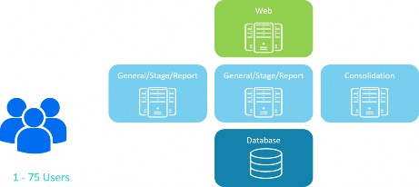
Figure 15.1
In this example, Figure 15.1, the total Users number is between 1 and 75. Based on the total User count, the environment configuration will be:
One Web Application Server
Two General/Stage/Reporting Application Servers
One Consolidation Application Server
One Database Server
What does this mean on the first day of the project? Well, this is the environment to work with. This will be the environment to work within as the requirements, design, and build processes begin.
There is one Web Server to support logon activity and User interaction from any local machine back to Application Servers. This would include processes such as using OneStream Retrieves.
There are two General/Stage/Reporting Servers. These are multi-purpose servers that share server resources to support general navigation within OneStream, data loading, and reporting. This means that these two servers can perform all these tasks and are sharing their resources over multiple processes. These servers are not dedicated to a specific process.
There is one Consolidation Server that is dedicated to only performing calculations, translations, and Consolidations. However, this server can also be configured to share processes for Data Management activities as well.
There is one Database Server that is used to store all the data and metadata in OneStream tables. The Database Server communicates between all the Application Servers.
The configuration may need to be changed by the time the design is completed. For instance, maybe each User is responsible for a Workflow. There may be 70 data load Workflows. Then you find out that the Users are all in the same time zone, and they need to all close their Workflow processes on Day 3. This means that all 70 Users will be working in their Workflow, importing data, validating data, loading data, and querying data at the same time! Knowing that the environment only has two servers – and they share server resources between data loading, reporting, and general navigation – is important. More than likely, the environment will need to be addressed during the project. Allocation of more Stage Server resources to support the data loading activity during concurrent processing would be required. Being proactive and transparent while communicating throughout the project is a recipe for customer and project success.
Performance Tuning II › Performance Planning
Final Notes
Understanding the environment configuration is a good start to any project’s proceedings. However, this cannot be the only factor that we use for the environment as the project goes through its lifecycle. There will be consistent evaluations of environment performance in conjunction with the building of the application.
With this configuration setup for the environment, we know what we are cooking with. Using the analogy from the start of the chapter, the cooking vessel is defined. Next, the meal needs to be designed and created in order to use this cooking vessel effectively.
Performance Tuning II
Application Design Impacts Performance
In the previous sections, we defined how the environment is built at the start of the project. Total Users drove how the environment was built. In this section, though, we will discuss how the other factors related to application design impact the environment performance.
In our earlier example, Figure 15.1, we built an environment to support up to 75 Users. This is the equivalent of using a small charcoal grill. As a Consultant, knowing that a small charcoal grill is being used means that the requirements, design, and build will be limited. The small charcoal grill has constrained options. So, having decided on the meal to make, there will be limitations as well. For instance, the designer won’t be able to cook sausages, baked potatoes, and grilled vegetables all at the same time.
What’s the problem with the constraints of the grill? Well, firstly, it takes a significant time to warm up as the charcoal burns and turns gray. Next, you are unable to fine-control the heat to cook the food quicker. Finally, the small charcoal grill is not conducive to cooking a lot of items at one time! There are considerations on what needs to be cooked when. This can be considered a queueing process. Potatoes first, sausages next, and finally grilled vegetables last? Because potatoes take the longest to cook? Or is the order different because there are more sausages to cook, and the baked potatoes are cut into tiny pieces so they can cook faster? Basically, lots of considerations to think about, and the various factors represent the same conundrum that designers and implementers have when designing and building an application with environment performance in mind.
Performance Tuning II › Application Design Impacts Performance
Financial Data Model
Building a well-designed Financial Model is crucial for environment performance. This is the foundation of every data collection process that will be developed now and into the future. As mentioned previously, Data Model Size and Data Unit Size are other factors that impact environment performance. These factors contribute to the physics of data modeling. Awareness of data modeling physics is the key for any high performing data model within the application and the environment. The goal of the Financial Data Model is to meet customer requirements by partitioning the metadata and data into manageable consumable chunks that are relevant to audiences. Let’s look at how Data Model Size and Data Unit Size affect performance.
Performance Tuning II › Application Design Impacts Performance › Financial Data Model
Data Model Size
Cube, Dimensions, and Dimension metadata Members create the Data Model. Dimension metadata Members and hierarchies are often determined at the time of the project. The customer normally has some vehicle for reporting their data (whether it was in a former solution or something as simple as Excel).
The metadata could include Dimensions such as Entity or Account, or any other User-Defined Dimension such as Cost Center, Department, Region, State, or Data Type. What usually isn’t decided during requirements are Cubes and Extensibility. They are hugely important during design because they create the data partitioning for best performance. As mentioned in previous chapters, all designs should start with Extensibility. For Data Modeling design on Cubes and Extensibility, please refer to Chapter 3: Design.
Why is data partitioning so important? Data partitioning provides operational flexibility and improves performance. This is because the unit of work is broken up into data chunks that are more manageable and operationally relevant. Cube data is stored in Data Record tables by year. From there, any calculation or Consolidation processing is broken down further by unit of work. The unit of work is processed by the Data Unit, which consists of Cube, Entity, Parent, Consolidation, Scenario, and Time. The remaining Dimensions and Dimension Members exponentially create the data model and the potential Cube cells that can be created.
Let’s look at a diagram of how physics plays a role between the data model and performance.
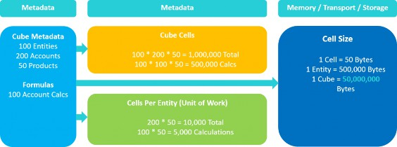
Figure 15.2
This example demonstrates a very basic data model. The metadata consists of Cube, Entities, Accounts, and Products. Remember that the unit of work is determined by the Data Unit. Cube and Entity are part of the Data Unit along with Parent, Consolidation, Scenario, and Time, while
Accounts and Products are not. The Data Model has 200 Accounts and 50 Products. Out of the 200 Accounts, we have 100 Accounts that are calculated. That is a ratio of 50% of our Accounts calculating data. In turn, for every Cube/Entity/Parent/Cons/Scenario/Time combination, we will have 200 Accounts and 50 products. What does this mean for the total number of Cube cells and unit(s) of work?
Performance Tuning II › Application Design Impacts Performance › Financial Data Model › Data Model Size
Cube Cells Created from Data Model
100 Entities * 200 Accounts * 50 Products = 1,000,000 Total Cube Cells
100 Entities * 100 Calc Accounts * 50 Products = 500,000 Total Cube Cells from Calculations
Performance Tuning II › Application Design Impacts Performance › Financial Data Model › Data Model Size
Cube Cells per Entity (Unit of Work)
One Entity Unit of Work = 200 Accounts * 50 Products = 10,000 Total Cells Per Entity
One Entity Unit of Work = 100 Account calculations * 50 Products = 5,000 Total Cells from Calculations
Once the Data Model is determined, how does this tie back to performance? We know that breaking up the unit of work is important for performance, but what’s behind the scenes? Determining the number of cells is key, but what does the cell size look like, and what is the cost to store and transport the cell data in a single Cube? Using our diagram and example from Figure 15.2:
Performance Tuning II › Application Design Impacts Performance › Financial Data Model › Data Model Size
Cell Size for Memory, Transport, and Storage
One Cell = 50 bytes
One Entity = 10,000 Total Cells * 50 bytes = 500,000 bytes
One Cube = 1,000,000 Total Cells * 50 bytes = 50,000,000 bytes
This is a simple example of a data model and the resources needed to store and transport cell data. In reality, most data models are much larger. Data models come in all sorts of shapes and sizes where additional Dimensions are used and/or Dimension Member counts are larger to accommodate requirements. The more Dimensions and Dimension Members outside the Data Unit used in a data model, the more consideration is needed to determine potential Cube cells and units of work per Entity.
Another impact on performance – in terms of the design of the data model – is the Entity hierarchy. The Consolidation Server really loves an Entity hierarchy with lots of Base Entities and fewer Parent Entities. This is because of the multi-threaded processing of the unit of work. Base Entities can be processed in parallel and leverage the CPU threading on the Consolidation Server.
In Figure 15.3, the Entity hierarchy has five Base Entities that roll up to one Parent Entity.
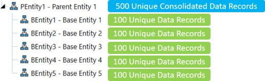
Figure 15.3
From a performance perspective, the Consolidation Server will efficiently process the Base Entities as they can be processed in parallel and consolidate to only one Parent. During the Consolidation process, the CPUs on the Consolidation Server will sit at around the 90-95% mark. This is good.
The CPUs are using their multi-threading capabilities to split the unit of work across all CPUs on the Consolidation Server.
During this time, the Database Server is also working as data is being written/updated within the server. However, it’s not as hard as with the Consolidation Servers. It is much easier to update data records that already exist in the database table, in comparison to inserting new data records into the database table. CPUs on the Database Server will sit at around 40%. This is normal behavior. The Consolidation Servers are the robust servers, and these are the servers built to take the brunt of the Consolidation process.
Also, there is a possibility that the data records for each Base Entity are unique and don’t share common data record intersections. This is considered a non-aggregating pattern. Therefore, during the Consolidation, PEntity1 cannot aggregate the data records from its Base Entities to combine into a single data record. The final Consolidation at PEntity1 will consist of 500 unique data records.
In Figure 15.4, the Entity hierarchy has more of a one to one ratio between Base and Parent Entities. For every Parent Entity, one Base Entity rolls up to it. This is a one to one relationship; five Base Entities and six Parent Entities in this hierarchy.
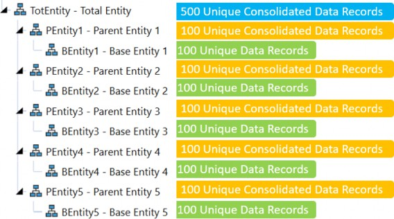
Figure 15.4
But what happens in terms of performance? Introducing the additional Parent levels with the one to one relationship will change the way both the Consolidation and Database Servers work. In addition, extra work is happening at all the PEntity level Parents, as they are essentially replicating the same data records as Child Entities data.
The extra work (consolidating the same data as Child Entities) is done in a more single-threaded manner, creating increased performance times. In this scenario, the CPUs on the Consolidation Servers will perform at a 40-50% level, and the Database Server will perform at an 80-90% level. The roles are now reversed compared to an Entity hierarchy with fewer Parents. The Database Server is now taking the brunt of all the work, since there is a lot of writing of data to all the Parents. Again, this is in a single-threaded manner. This hierarchy has six Parents to have to write to, versus one Parent in the other Entity hierarchy. In addition, the data records are in a non-aggregating pattern, so the top Parent Entity cannot optimize data storage to common data records. At the end of the Consolidation, the Cube stored data record count is 1,500 in this hierarchy, compared to 1,000 Cube data records in the previous illustration.
One last data model concept to consider – in terms of performance – is turning on the Stored Share option through the Consolidation Algorithm Type on the Cube. As a default, Share is dynamically calculated on the fly using (Translated + OwnerPreAdj * % of Consolidation). When the Stored Share option is turned on, the same logic is executed but is now stored in the DataRecordXXXX tables.
When the Consolidation runs, the Consolidation and Database Servers perform differently when the storing of the Share data records is executed. The same behavior happens if the Entity hierarchy has a one to one relationship between Parent and Base Entities. The Consolidation Server will process at 40-50%, while the Database Server will process at 80-90%. There are a lot more data records to now write to the DataRecordXXXX tables, and this process is not able to take full advantage of the CPUs on the Consolidation Server. Share is now stored, and is the base for Elimination data records. By default, Elimination data records are always stored in the Database table.
To summarize, data partitioning is vital for optimal performance. The data model is primarily the key to partitioning the unit of work, and providing optimal performance. Cube and Entity are drivers for total Cube cells and unit(s) of work. Together, they combine to partition data efficiently for calculations, Consolidations, reporting, and operational relevance. The data model also has a direct relationship with data volumes, which will be covered in the next section.
Performance Tuning II › Application Design Impacts Performance › Financial Data Model
Data Records and Data Unit Size
In the previous section, the relationship between the Data Model and performance was discussed. In this section, the impact of data records and Data Unit sizes on performance will be discussed. Before jumping into data records and Data Unit sizes, let’s look at the foundation tables in which the data records are stored.
Prior to loading data into a Cube, the source data goes through a transformation process. During the transformation process, the source data is mapped and validated against Dimension Members determined as part of the data model. When source data is first imported, the source data resides in tables within the Staging Engine. As the data gets transformed and prepared for the Cube, this is the opportunity to aggregate the source detail data to target summarized data through the mapping process.
Once the data is prepared for the Cube and the Cube is loaded, the data resides in two tables: StageToFinanceLoadResult, which is a table associated with the Staging Engine, and the DataRecordXXXX table, which is a table associated with the Finance Engine. The XXXX in the DataRecord table indicates the year. This is a data partitioning technique that is inherent within the infrastructure. Data is stored by year.
Performance Tuning II › Application Design Impacts Performance › Financial Data Model
Anatomy of DataRecordXXXX Table
The DataRecordXXXX table can be identified as the Consolidation tables for any data collection process, whether it is Actual, Budget, Planning, etc. Data records are stored in these tables from either Import, Forms, Journals, the result of calculations, Stored Share, or Eliminations. The table contains 46 columns that hold Dimension Member IDs, data cell values, and data cell status. The first seven columns are related to concepts that were discussed as part of the data model. These columns are associated with partitioning and Data Unit Dimensions
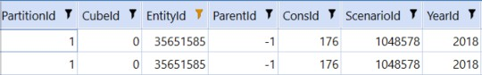
Figure 15.5
Performance Tuning II › Application Design Impacts Performance › Financial Data Model › Anatomy of DataRecordXXXX Table
CubeId
The CubeId is a unique Id assigned to the Cube upon Cube creation. The CubeId has a direct relationship with EntityId and PartitionId, and is part of the Data Unit.
Performance Tuning II › Application Design Impacts Performance › Financial Data Model › Anatomy of DataRecordXXXX Table
EntityId
The EntityId is a unique Id assigned to each Entity Member upon Entity Member creation. The EntityId has a direct relationship with the CubeId and PartitionId and is part of the Data Unit.
Performance Tuning II › Application Design Impacts Performance › Financial Data Model › Anatomy of DataRecordXXXX Table
ParentId
The ParentId is a unique Id assigned to each Parent Member. The ParentId will populate with a valid Parent during the Consolidation process when the direct Entity/Parent relationship is executed. ParentId is part of the Data Unit.
Performance Tuning II › Application Design Impacts Performance › Financial Data Model › Anatomy of DataRecordXXXX Table
ConsId
The ConsId is a unique Id assigned to each Cons Member. The ConsId is specific to each Cons Member and is static. For instance, ConsId 176 is USD. The ConsId is part of the Data Unit.
Performance Tuning II › Application Design Impacts Performance › Financial Data Model › Anatomy of DataRecordXXXX Table
ScenarioId
The ScenarioId is a unique Id assigned to each Scenario Member upon Scenario Member creation. The ScenarioId is part of the Data Unit.
Performance Tuning II › Application Design Impacts Performance › Financial Data Model › Anatomy of DataRecordXXXX Table
YearId
The YearId is a unique assigned Id based on the year associated to the DataRecordXXXX table. The YearId is part of the Data Unit.
Performance Tuning II › Application Design Impacts Performance › Financial Data Model › Anatomy of DataRecordXXXX Table
PartitionId
The PartitionId is a unique Id to divide the unit of work into chunks. The PartitionId has a direct relationship with the EntityId. Every Entity Member is assigned to a specific PartitionId within the DataRecordXXXX table. Within the EntityId and PartitionId relationship, different CubeIds exist.
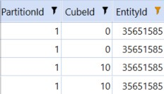
Figure 15.6
In the above illustration (Figure 15.6), the Entity exists in multiple Cubes, which were created through the data model. CubeId 0 will be the Top Level Cube, while CubeId 10 is the Cube where the Entity resides.
In addition to the Data Unit and Partition columns, there are 12 monthly data value columns and 12 monthly cell status columns.
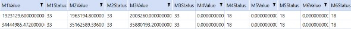
Figure 15.7
Performance Tuning II › Application Design Impacts Performance › Financial Data Model › Anatomy of DataRecordXXXX Table
Value Columns
Every DataRecordXXXX table contains 12 monthly Value columns M1-M12. These store the data cell values for a specific data record by month. For every data record, there are 12 data cell value columns.
Performance Tuning II › Application Design Impacts Performance › Financial Data Model › Anatomy of DataRecordXXXX Table
Status Columns
Every DataRecordXXXX table contains 12 monthly Status columns M1-M12. These store the data cell statuses for specific data records by month. For every data record, there are 12 data cell status columns. Common statuses for Base Entities are:
33which indicatesCell Amount <> 0.00,Is Real Data = True,Is Derived Data = False, andStorage Type = Input18which indicatesCell Amount = 0.00,Is Real Data = False,Is Derived Data = True, andStorage Type = StoredButNoActivityFor a Parent Entity, a common status is
97, which indicates a Parent with data,Is Real Data = True,Is Derived = False,Storage Type = Consolidation
Now that some of the key columns for the DataRecordXXXX table have been explained, data records and data volumes can be discussed.
A data record is a record that consists of a combination of 18 different Dimension Members. Data records can be created in many forms. Data records can be created as the result of mapping source data in the Staging Engine and loading into the DataRecordXXXX tables. Data records can be submitted through Forms or Journals.
In addition, data records can be created as a result of calculations or Consolidations. Data records are stored for Eliminations as well as when Stored Share is used in the data model design. Stored Share is typically created dynamically, and not stored. However, if Stored Share is turned on, the data records for Share will be stored in the DataRecordXXXX table.
For every unique data record created in the DataRecord table, there are 12 Value columns, one for each month. That means there are 12 data cells per data record in the DataRecord table. The first month that data is loaded into the DataRecordXXXX table takes a little time. The reason is that this is the first month when data records are inserted into the table. For all subsequent months, the data cell value is updated on the data record for that month. This technique allows for faster loading to the Cube since data records are being updated versus inserted. In addition, the number of data records are controlled as there is not a unique data record by month.
As illustrated below (Figure 15.8), one Entity contains 1,000 data records through Import, Calculation, Forms, Journals, and Elimination. Each one of those data records contains 12 data cell values. Using simple multiplication, the total data cells for this Entity is 12,000.
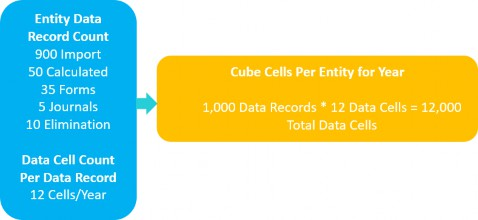
Figure 15.8
As part of the project, it is highly recommended to review the Application Analysis Report. In this Report, there are key metrics that support Data Unit records, Data Unit sizes, and the optimization of formulas.
Formula Statistics – provides visibility into all the Member Formulas and dynamic calculations by Dimension and the impact on the CPU usage. This is very useful when identifying Member calculations in conjunction with CPU usage.
Data Statistics – provides insight into Cube Records broken out by Scenario and Origin. In addition, the Report identifies how many data records were imported through the Workflow. The Explosion Factor is a ratio metric that identifies the percentage of data records created in the Import Origin as a result of calculations. Experience has shown that the lower the Explosion Factor, the better the performance.
Data Unit Statistics – provides insight into data records by the Data Unit. This is the most impactful Report for understanding the data records at Base Entities, and data records at Parent Entities. The data records can be shown by local currency, translated currency, and Elimination. If using the Stored Share option, there will be data records shown for Share as well. This Report should be used as part of all implementations.
Why is all this important? Because data record volumes and data cell count have significant impacts on performance. Optimally, for a well-performing full-year Consolidation, the top of the house Consolidation Entity should be at approximately 250,000 total data records in a Cube. This equates to 3,000,000 total data cells for the year. During a full year Consolidation, 3,000,000 data cells will be processed. Once the data records start to reach beyond this point, physics and technology play a bigger role in performance. This is where hardware comes into play.
As the data record count grows past 250,000 total data records at the top Entity, adjusting the hardware can prove useful in optimizing the Consolidation Servers. The optimization of a Consolidation Server can be done in a few ways:
Adding more processors
Increase multi-threading capabilities
The addition of faster CPUs
By adding more processors and/or increasing multi-threading capabilities, there is an opportunity to improve parallel processing. This means that more Base-level Entities can be processed at once, and each unit of work is performed faster. The downside is that the Consolidation Server is working faster than the Database Server and creates even more database pressure, which limits scalability. The Database Server would need to be addressed for more resources to be applied.
At some point, however, there is a point of diminishing returns. It doesn’t matter how many CPUs or multi-threading get added or increased. The data record volume is just too great to power through the Parent Entities. This could even happen at a Base Entity if the Base Entity contains
~90% of the overall data records, for example. At the Parent Entity level, there are fewer multi-threading options and more single-threaded processes. Therefore, threading on the CPUs becomes less effective and is now dependent on the CPU processors and processor speed. Faster processors have a big impact on large Parent Entities. A minimum CPU clock speed of 3.7 GHz – 4.0 GHz is preferred.
As much as faster processors sound fantastic, there are some limitations. For cloud environments, physically replacing the CPUs with faster processors is not possible. The CPU and CPU processors are provided by the cloud providers and the data center. For on-premise environments, it is possible to physically replace the CPUs with faster processors. Again, a minimum CPU clock speed of 3.7 GHz – 4.0 GHz is preferred. Obviously, the faster, the better. The downside is that CPUs with fast processors are more expensive. As a Consultant, this may require a discussion after the data model and data record volumes are determined, and the question to be asked is, “Does the customer deem Consolidation performance acceptable?” If data record volumes exceed 250,000 total data records at any Parent Entity, or at the top Entity, and Consolidation performance time is not where the customer would like, then this is an option to offer. But once again, this would only be for on-premise customers and they would need to be willing to make the investment in faster CPU processors.
Performance Tuning II
Application Performance Case Study
Let’s put all these concepts into practice, with basic requirements, and go through the decisions made regarding performance and hardware configuration changes.
Performance Tuning II › Application Performance Case Study
Customer Requirements:
Customer environment will be on-premise
75 Users. Mix of data loader and data view Users
Decentralized organization where each division loads data
First phase of the project is for Actual data collection
Five-day close process
Data Units for unit of work are unique, and data has a more non-aggregating pattern
Desire for 20-minute full-year Consolidation
Automation of Consolidations every three hours during the five-day close process
Performance Tuning II › Application Performance Case Study
Environment
Customer chooses an on-premise installation.
Performance Tuning II › Application Performance Case Study › Environment
What to Look Out For
When a customer brings the infrastructure in-house, as an on-premise offering, the foundational infrastructure is not using smart load balancing. Therefore, more responsibilities reside on the Consultant to balance processes as much as possible. This also adds a level of communication that is needed between Consultants and the customer sponsors, IT, and/or the finance department.
If OneStream cloud:
Cloud smart load balancing directs processes for performance where hardware is available
Scale environment as needed with customer authorization. Scaling done through OneStream
If on-premise:
Consultant designs balancing of processes to optimize performance where hardware is available
Direct Workflows to process Cube on specific Consolidation Servers
Direct multiple Data Management jobs to run on different Consolidation/Data Management Servers
Direct button Dashboard Components to run on different Application Servers
Scaling is done by customer IT
Performance Tuning II › Application Performance Case Study
User Count
Determines how the environment was built and configured. With 75 Users as part of the requirement, the environment will be setup like this:
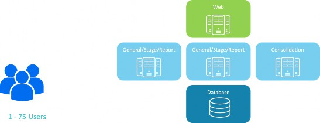
Figure 15.9
One Web Server to handle logon activity
Two General/Stage/Report Application Servers to support general navigation, data loading, and reporting on each server
One Consolidation/Data Management Application Server to support calculation, translation, and Consolidation activities. In addition, this server can execute Data Management jobs upon request
One Database Server to support the storage and management of data
Performance Tuning II › Application Performance Case Study › User Count
What to Look Out For
What is going to be the concurrency of the Users’ processes and activities? This typically comes out during Parallel testing, where a day in the life of OneStream can be simulated.
Performance Tuning II › Application Performance Case Study
Data Model Features
Entity and UD1 have a more distinct one to one relationship. Because of the decentralized nature of the organization, Entities share very few of the UD1 Members.
Entity structure has 200 Base Entities and 20 Parent Entities
One Cube
No Extensibility
Performance Tuning II › Application Performance Case Study › Data Model Features
What to Look Out For
The first thing is that we are using one Cube. While one Cube can be used, does it make sense in this situation for performance? Or does breaking up the Cubes and Entities with a more relevant Dimension model make more sense for performance?
Next, Extensibility is not used, which means we are not partitioning the data any further. A UD1 is designed and built but creates a distinct one to one relationship with our Entities. A single Entity is only going to use one or a few UD1s. This affects the Entity as the Entity is the primary unit of work.
This configuration, using one Cube, is going to have an impact on Consolidation and reporting performance.
Performance Tuning II › Application Performance Case Study
Workflow Configuration and Processing
There are 200 Base Entities that will be loaded with data
50 Workflows have been created to load to the 200 Base Entities
35 of the 50 Workflows are in the same time zone
Data is loaded during Day 1 and Day 2 of close, with adjustments sprinkled through Day 3 – 5
Reviewers review data through Workflow
View Users are running Reports through the close process, Day 1 – 5
Performance Tuning II › Application Performance Case Study › Workflow Configuration and Processing
What to Look Out For
During Day 1 and Day 2, there is a lot of data loading activity – across a specific time zone – while View Users are looking at data. The environment is setup for two General/Stage/Report Application Servers. General navigation, data loading, and reporting duties share the same two servers.
Can the two Application Servers support the activity during Day 1 and Day 2 where there is the most activity?
If not, can the two Application Servers be reconfigured to address the prime activity times? For instance, can the first server be the all-purpose General/Stage/Report Application Server and the second server be designated as the General Application Server only?
If reconfiguring the Application Servers does not do the trick, then there needs to be the conversation of adding a third General/Stage/Report Application Server to support the activity.
In this situation, the most likely outcome is that a discussion would need to be had with the customer about adding an additional Application Server to support Day 1 and Day 2 activity. Often, this type of discovery is confirmed during a UAT, or parallel testing. Even if UAT or parallel testing is not part of the project plan, Consultants should forecast whether limits are going to be pushed; this is critical for proper communication and setting customer expectations.
Performance Tuning II › Application Performance Case Study
Data Record and Data Unit Sizes
Data record at the top Entity is 300K
Data records at higher-level Parents are large
Consolidations take 40 minutes for a full year
Performance Tuning II › Application Performance Case Study › Data Record and Data Unit Sizes
What to Look Out For
Be aware if the data model creates distinct data records – as they are in a non-aggregating pattern at the Parent levels. The unique data records will increase data volumes as the Consolidation moves up the hierarchy.
Limit running calculations at Parent Entity levels. Only run formulas on Parents when absolutely needed. When calculations run at the Parent Entity level, they will create more data records at the Parent; hence, doing more work during Consolidation and creating more data records to consolidate. Also, check all formulas and Business Rules to ensure that they are running efficiently.
After optimizing any formulas, look at more CPUs or change threading. More CPUs will help with the Base Entities and do more work faster at the Base levels. Any increase in processing the Base Entities may help with Consolidations, but may not be enough to get to the desired result. Adding more CPUs requires a discussion with the customer and working with IT to add them.
If adding more CPUs or changing the threading doesn’t provide the Consolidation improvements as expected, then it comes down to CPU processor speed. As mentioned earlier, when Parents have large amounts of data records, only the CPU processing speed can save the day. The issue can be identified during the Consolidation by reviewing the Data Unit Statistics Report to determine the data record counts. If the Base Entities are processed in five minutes, and then it takes 35 minutes to consolidate through the Parents, then it is evident that the CPU processors have a lot of data to churn through at the Parent levels. This finding would also require a discussion with the customer to set expectations. As 20 minutes would be nice for a full-year Consolidation, there is a limitation due to the speed of the CPU. Even by replacing the CPU with faster processors, the Consolidation time may get much closer to 20 minutes, but may end up just shy of that. Again, setting expectations with the customer is important.
In this scenario, 300k data records is the result, based on the data volume and data model. In some cases, data records can get to much larger numbers, such as 750K or 1 million in a Cube. In this type of situation, it is strictly a physics and technology conundrum. CPUs and CPU processors can only do so much. At some point, the CPU can only do so much work, and CPU speed can’t go any faster without new technological breakthroughs. Therefore, performance expectations will have to be set accordingly. Remember, faster CPUs can be replaced with an on-premise installation. This is not the case with a cloud installation since the CPUs cannot be replaced.
Performance Tuning II › Application Performance Case Study
Automation of Consolidations
Customer requires to consolidate every three hours through Day 1 – 5
Performance Tuning II › Application Performance Case Study › Automation of Consolidations
What to Look Out For
The requirement seems great and can be configured easily. However, let’s think about our process and the hardware available to do this.
During Day 1 and Day 2, data loaders are loading data into the Cube, and they click on the Process Cube step. This step kicks off any processes, as defined in the Workflow Calc Definition. Typically, the Workflow Calc Definition kicks off a calculation of the Base Entities assigned to the Workflow; in some configurations, we may be translating to a different currency or even consolidating to their direct Parent.
There is one Consolidation Server in this configuration, and it also runs Data Management jobs. This means the Process Cube step will use the Consolidation Server. In addition – every three hours – there will be a Data Management job to run for a full-year full-company Consolidation. Both processes use one Consolidation Server.
While attempting to incorporate these processes efficiently, determining how long a full-year full-company Consolidation takes should be the first step. If the customer wants to consolidate every three hours and it takes three-and-a-half hours to consolidate, it doesn’t make a lot of sense to run a Consolidation every three hours. In this example, the desired time to consolidate is 20 minutes, so three hours is more than reasonable.
Next, let’s examine the processing of Workflows using the Consolidation Server versus the Data Management job using the Consolidation Server. There is one server that needs to be shared across processes. Data loaders will continue to load the Process Cube throughout the three hours between
Data Management jobs. If a Process Cube has started just before the Data Management job was to run, the Data Management job will be queued until the Process Cube has been completed.
Typically, the Process Cube runs quickly, so the queueing of the Data Management job should take a few seconds.
However, when the Data Management job runs for the Consolidation, the Consolidation Server will consume all its CPUs for 20 minutes to finish the job. This means all other activities that would be executed on the Consolidation Server are queued, waiting on the Data Management job to finish.
If this is a process that is truly needed, then a conversation should be had with the customer to add another Consolidation Server. One Consolidation Server to handle the Users’ activities and one specific Data Management Server to execute the Data Management Consolidation job at a specific time interval. This would divide the processes up efficiently and improve the overall experience.
Performance Tuning II › Application Performance Case Study
Reporting
All data loaders and viewers are using Cube Views for reporting
Performance Tuning II › Application Performance Case Study › Reporting
What to Look Out For
What does this mean? As Users are running Cube Views, each User will consume one CPU on an Application Server that is assigned for reporting. In this scenario, there are two Application Servers available for reporting. If there are 12 CPUs on each Application Server, then 24 Users can execute running Cube Views at one time, assuming no other activities are running on the general Application Servers.
The data model is driving what the Reports will look like. As mentioned in previous sections, Entity has a one to one, or one to few, relationship with the UD1 Dimension Members. If Base
Entity BEntity1 has data with only five of the 100 UD1 Members, then we have sparsity. Only 5% of the UD1s get used by BEntity1.
If the Cube View is designed with the rows using UD1.Base, we will have five UD1 Members that have data and 95 UD1 Members that will not have data for BEntity1. 95 UD1 Members are not relevant to BEntity1 and, more than likely, many of them will never be used by BEntity1.
Therefore, because the data model was built the way that it is, many of the Cube Views using UD1 in the rows or columns may need spare suppression logic turned on. This impacts the Application Servers as inefficient Cube Views, Dashboards, Quick Views, or Retrieves will hold onto a CPU longer, to process cells to return, even though most of the cells have no relevancy and have no data.
Performance Tuning II › Application Performance Case Study
Final Notes
The case study and performance decision points circle back to what we are cooking with. The environment started out as a small charcoal grill. By the time the requirements surfaced, and the design and build were completed, there was a realization that a bigger cooking vessel was needed to cook everything on the menu. In this instance, the cooking vessel was increased by adding another Application Server to manage the Day 1 and Day 2 activity, and adding a Data Management Application Server to accommodate an automated Consolidation process.
Performance Tuning II
Other Performance Considerations
Most of this chapter is geared toward performance related to data modeling and data volumes. That’s with good intention. For most implementations, this is the #1 focus for the best User Experience, and adaption for data processing and retrieval. However, the chapter cannot be complete without bringing to light data importing into Stage, plus data volumes in Stage. There are many chapters within this book that touch upon data loading. See Chapter 6: Data Integration, Chapter 7: Workflow, and Chapter 14: Performance Tuning I.
Chapter 14 provides techniques for improving data import processing for large data volumes. Options such as changing Workflow Cache Settings and addressing Transformation Rules can be useful tools to improve the processing of large volume data loads. However, to even identify where to start troubleshooting Workflow performance, it is a good idea to set Use Detailed Logging to
True on the Workflow that will import the large dataset.
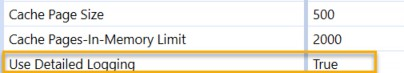
Figure 15.10
Once data has been imported, check the Task Activity and the details of the data import. This allows for a drilldown into details for ExecuteDerivativeRules, ExecuteTransformationRules, and PostCacheData processes.
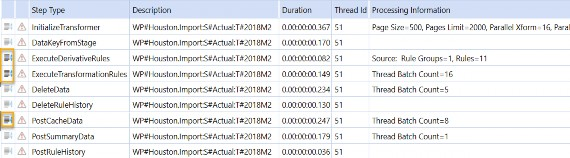
Figure 15.11
Once troubleshooting is complete, make sure to change Use Detailed Logging to False.
Performance Tuning II
Conclusion
Every OneStream customer is 100% referenceable. As part of this mantra, implementation and performance are vital to meet the standard. As a OneStream Consultant, there is a responsibility and a duty to do right by the customer. Performance tuning is part of that. As discussed throughout this chapter, there are a lot of moving parts to a project. The hope is that this chapter is the guiding light in relating application build with hardware and performance optimization.
Performance Tuning II
Epilogue
When I first joined OneStream back in 2011, we had six of us jammed up in one big suite, broken out into two offices and a ‘main lobby’. Welcome to OneStream! The photo (right) shows my desk when I was in the office. This lovely desk and hutch set was part of the new renovation of OneStream.
I became good friends with UPS and the FedEx delivery folks. This is also where I found out that John Von Allmen hates peanut butter, razzed Jacqui Slone with Little River Band, enjoyed Friday afternoon mimosas, and put Jody Di Giovanni in a corner. Literally, we tucked her away in the corner when she joined. Nobody puts Jody in the corner. Little known facts.
When I was not at my desk or at a customer, I spent time in the conference room (left) either on calls or delivering training for our first offering of the Administrator Build Class.
We could only hold eight students in the class. You can’t see it in this picture, but the bathroom is right next to the conference table where the Trainer trains.
The biggest decision to make during training was what we should NOT have for lunch. The walk of shame to the bathroom was real.
When training wasn’t happening, we would use the conference room for our weekly OneStream meeting. During this time, we would dial into the Free Conference meeting number where Eric Davidson would dance to the erotic, dulcet tones of the hold music.
This third image (right) shows the place to warm up on a cold Michigan winter day – the IT room. This room served a dual purpose – the location for our physical server, and the hottest place on earth.
I look at these pictures, and I can’t believe where we are today. These pictures serve as some of the greatest memories of my lifetime, and I would never trade these experiences for anything. I am so fortunate to have gone through this journey with all my brothers and sisters. I thank everyone in this book because these are the people who I grew up with, and I love them all like family. Did you know Peter Fugere is kind of a big deal?